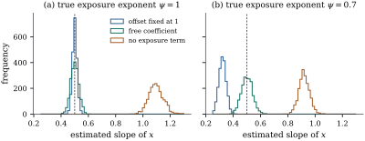

37.2 Offsets and rates
A count on its own is rarely interesting. Twelve accidents mean one thing on a road carrying a thousand vehicles a day and another on one carrying a hundred thousand. What is comparable is the rate: the count divided by the exposure that produced it. The Poisson log-linear model handles rates without new machinery, by moving a known quantity into the linear predictor and refusing to give it a coefficient.
37.2.1. Exposure
Let
The term
Consider the model Eq. 37.2.1 with
(a) the log-likelihood is
(b) consequently Theorem 37.1.2 holds verbatim: the fitted counts, not the fitted rates, reproduce the observed margins of the model matrix, and with an intercept
(c) (grouping) suppose the rows of
(d) (a free exposure coefficient) the model
Proof.
(a) Substituting
(b) Within group
(c) Setting
Part (c) says that grouping records with identical regressors and carrying the group size as an exposure is exactly a bookkeeping operation. It is a property of the Poisson, not of generalized linear models in general, and it comes from sums of independent Poissons being Poisson. The use is both practical — twenty thousand records collapse to a few dozen — and theoretical: the grouped cells may have large counts, so the deviance of a single fitted model is calibrated by Theorem 34.5.5 even though it is not for the individual records.
Take the physician-visit data of Example (Physician visits in a health insurance experiment)
and keep only categorical regressors: the
individual-deductible indicator, the three self-rated
health indicators, and the chronic-disease score banded
into four groups. There are
Read as rates, a person-year in excellent health, in
the lowest disease band and on a plan without an
individual deductible, is expected to produce
The grouped deviance is
import numpy as np
import pandas as pd
import statsmodels.api as sm
def scoring(X, y, offset=0.0, tol=1e-11, maxit=60):
"""Fisher scoring for a Poisson log-linear model with a fixed offset."""
beta = np.zeros(X.shape[1])
beta[0] = np.log(max(y.mean(), 1e-6))
for _ in range(maxit):
mu = np.exp(X @ beta + offset)
z = X @ beta + (y - mu) / mu # working response
XW = X * mu[:, None] # weights w_i = mu_i
step = np.linalg.solve(X.T @ XW, XW.T @ z)
if np.max(np.abs(step - beta)) < tol:
return step
beta = step
return beta
data = sm.datasets.randhie.load_pandas().data.copy()
data["band"] = pd.cut(data["disea"], [-0.1, 6, 10, 15, 60], labels=[0, 1, 2, 3])
cells = ["idp", "hlthg", "hlthf", "hlthp", "band"] # all categorical
y = data["mdvis"].to_numpy(float)
def design(frame):
"""Intercept, the plan and health indicators, and three disease-band indicators."""
columns = [np.ones(len(frame))] + [frame[v].to_numpy(float)
for v in ["idp", "hlthg", "hlthf", "hlthp"]]
band = frame["band"].to_numpy(int)
return np.column_stack(columns + [(band == k).astype(float) for k in (1, 2, 3)])
grouped = data.groupby(cells, as_index=False, observed=True).agg(
visits=("mdvis", "sum"), person_years=("mdvis", "size"))
s = grouped["visits"].to_numpy(float) # total visits in the group
t = grouped["person_years"].to_numpy(float) # exposure: person-years
X, Xg = design(data), design(grouped)
beta_person = scoring(X, y) # one row per person-year
beta_group = scoring(Xg, s, offset=np.log(t)) # one row per pattern, offset log t
print("groups:", len(s), " largest coefficient difference:",
np.abs(beta_person - beta_group).max())
print("fitted rate, free-plan person-years in excellent health:",
np.exp(beta_group[0]))37.2.2. What a free exposure coefficient buys and costs
Why fix
When exposure is a bookkeeping device — the grouping
of part (c), where the individual records are the real
data — proportionality is a theorem, not an assumption,
and a
When exposure genuinely varies across units — different follow-up times, different populations — proportionality is a substantive assumption, and there is a real trade-off, which a simulation makes concrete.
Counts are generated for
When the truth is
When the truth is

Warning. The third analysis fails
by ordinary omitted variable bias:
37.2.3. Rates elsewhere
Two further uses of the same device are worth naming.
Piecewise-constant hazards. Split
each subject’s follow-up into intervals on which the
hazard is constant, and let
Standardization. A standardized
morbidity ratio divides the observed count by an
expected count
Fixing the exposure coefficient is right when theory or bookkeeping says the count is proportional to the exposure, and costs nothing; estimating it is right when proportionality is in doubt, and costs precision. What is never right is leaving the exposure out.
37.2.4. Exercises
A. Check your understanding
A rate model uses person-years as the exposure. A
colleague re-expresses exposure in person-months,
multiplying every
Explain why regressing
B. Practice
Suppose subject
Solution. With a constant hazard
In the setting of Example (Three ways to handle an exposure),
suppose the analyst tests
C. Going deeper
Extend Proposition 37.2.1(c) to
the case where the individual records already carry
exposures
Solution. What must be constant
within a group is the row
Let the truth be